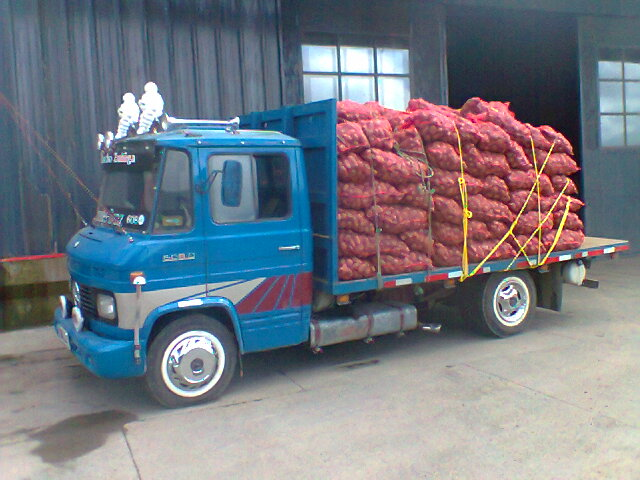

El problema de los sacos de papa
Muchas situaciones cotidianas pueden modelarse con desigualdades; el cual, nos ayuda a encontrar respuestas en un rango específico, como el caso de un agricultor en la ciudad de Huancayo - Perú.
“José debe transportar al mercado local al menos 500 kg de papas por semana para cubrir sus gastos y obtener ganancias, pero su camión tiene una capacidad máxima de 800 kg. Organiza las papas en sacos de 50 kg cada uno y se pregunta cuántos sacos debe llevar para asegurar que transporte al menos 500 kg sin exceder los 800 kg permitidos por su vehículo”
